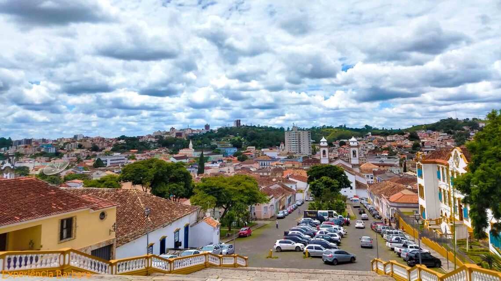
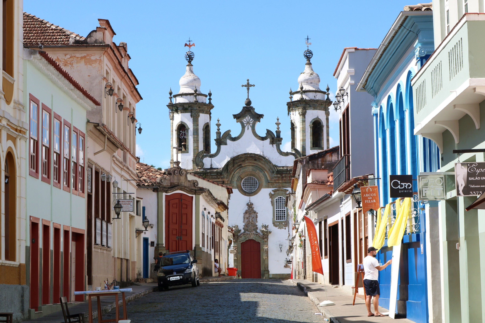
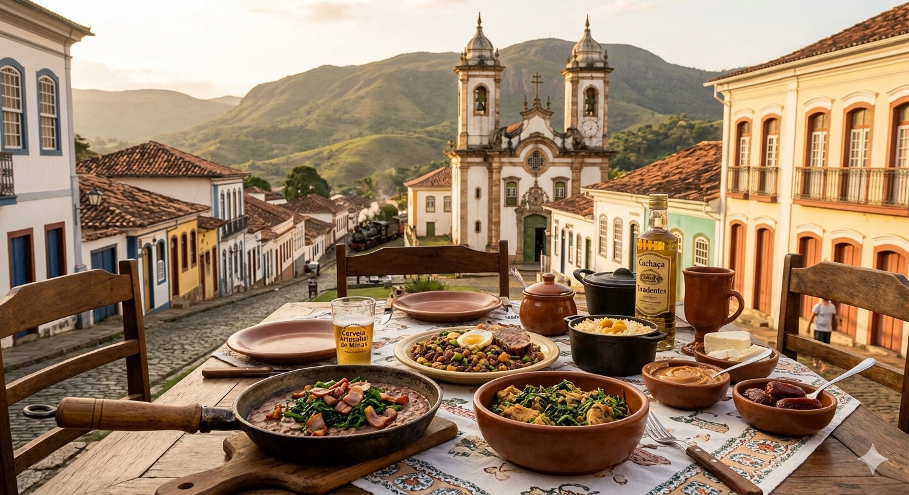

Maria Fumaça
Passeio turístico de trem que liga São João del-Rei a Tiradentes, oferecendo uma experiência histórica e cultural muito famosa na região.
História, tradição religiosa e cultura mineira em um dos destinos mais famosos de Minas Gerais
São João del-Rei é uma das cidades históricas mais importantes de Minas Gerais, conhecida pela sua arquitetura colonial, tradições religiosas e grande importância cultural.
A cidade mistura história, cultura, religiosidade e turismo, atraindo visitantes interessados em conhecer igrejas barrocas, museus, ruas históricas e o famoso passeio de Maria Fumaça.

Fundada durante o Ciclo do Ouro, São João del-Rei teve grande importância econômica e política no período colonial brasileiro.
A cidade preserva construções históricas, igrejas barrocas e costumes tradicionais que fazem parte da cultura mineira.
São João del-Rei é conhecida pelos sons dos sinos das igrejas, tradição religiosa que se mantém viva há séculos.

Passeio turístico de trem que liga São João del-Rei a Tiradentes, oferecendo uma experiência histórica e cultural muito famosa na região.
Uma das igrejas barrocas mais importantes da cidade, com obras ligadas ao estilo artístico mineiro.
Importante patrimônio religioso e histórico da cidade, conhecida pela arquitetura e riqueza artística.
Região com casarões antigos, ruas históricas, museus, restaurantes e construções coloniais preservadas.
Um dos monumentos históricos mais conhecidos da cidade, cercado por belas paisagens urbanas.
São João del-Rei possui forte tradição religiosa e cultural, principalmente durante celebrações históricas e eventos religiosos.
| Evento | Destaque |
|---|---|
| Semana Santa | Procissões e celebrações religiosas |
| Festival de Inverno | Música, arte e cultura |
| Eventos históricos | Apresentações culturais tradicionais |
| Toques dos sinos | Patrimônio cultural mineiro |
A culinária local valoriza receitas típicas mineiras, oferecendo pratos tradicionais e doces artesanais.

O artesanato local destaca produtos culturais e lembranças históricas da região.
| Informação | Detalhe |
|---|---|
| Estado | Minas Gerais |
| Tipo de turismo | Histórico, cultural e religioso |
| Principal destaque | Passeio de Maria Fumaça |
| Melhor experiência | Conhecer o centro histórico e as igrejas |
“São João del-Rei preserva a tradição histórica e religiosa mineira através de sua arquitetura, cultura e fé.”